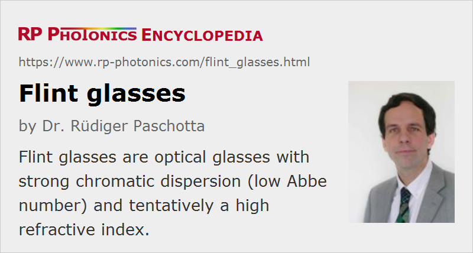

Flint Glasses
Definition: optical glasses with strong chromatic dispersion (low Abbe number) and tentatively a high refractive index
More general terms: optical glasses
German: Flintgläser
How to cite the article; suggest additional literature
Author: Dr. Rüdiger Paschotta
Flint glasses are optical glasses with an Abbe number below 50. This indicates strong chromatic dispersion and tentatively a high refractive index (although not necessarily a higher one than for a crown glass). Typically, the refractive index is larger than 1.55.
The term flint glass does not imply a certain chemical composition. However, the large refractive index usually results from the content of some heavy metals. Traditional flint glasses usually contain a lot of lead (Pb), possibly making up for about half of the weight of the glass. Their mass density is comparatively high. Although the lead is firmly contained in the glass, therefore not leading to a toxic risk of users, it often ends up somewhere in the environment after use. Therefore, a wide range of lead-free flint glasses with much less problematic agents have been developed. For example, one may use metals like titanium or zirconium. With a properly adjusted chemical composition, the optical properties can be very similar to those of traditional flint glasses. The RoHS directive of the European Union contributes much to the transition towards lead-free flint glasses.
Compared with crown glasses, flint glasses typically exhibit a UV absorption edge at longer wavelengths, which results from a lower band gap energy. Even in the spectral region with high transmittance, parasitic absorption and scattering losses are tentatively higher than for crown glasses. That applies particularly to glasses with extremely low Abbe number (high dispersion).
See the article on optical glasses for additional details.
Names of Flint Glasses
The common system of names for glass types uses a combination of one or more letters with a number. The letters indicate the general type of glass, e.g. 'F' for flint. There are various more closely specified flint glass types, see the following table:
| Abbrev. | German name | English name |
|---|---|---|
| F | Flint | flint |
| SF | Schwerflint | heavy flint |
| LF | Leichtflint | light flint |
| LLF | Doppelleichtflint | extra light flint |
| TF | Tiefflint | low flint |
| KzF | Kurzflint | short flint |
| KF | Kronflint | crown flint |
| BaF | Barit-Flint | barium flint |
| BaLF | Barit-Leichtflint | barium light flint |
| BaSF | Barit-Schwerflint | barium heavy flint |
| LaF | Lanthan-Flint | lanthanum flint |
Lead-free alternative glass versions with quite similar optical properties are indicated with “N-” in front. For example, N-SF8 is a lead-free version of the traditional SF8.
Application of Flint Glasses
For dispersive prisms, one usually uses flint glasses in order to achieve a sufficiently high angular dispersion. The same applies to many other applications where high chromatic dispersion is essential.
A combination of crown and flint glasses is often used for making achromatic optical elements.
For high-power laser applications, flint glasses are sometimes problematic since their parasitic absorption leads to thermal lensing effects.
Correction glasses are also usually made from flint glasses, since otherwise one would require a larger thickness, also leading to a higher weight. It is also advantageous to obtain improved UV protection due to the lower band gap energy. However, the increased chromatic aberration is not ideal for that application. In that respect, it is better to use a crown glass with relatively high refractive index.
Questions and Comments from Users
Here you can submit questions and comments. As far as they get accepted by the author, they will appear above this paragraph together with the author’s answer. The author will decide on acceptance based on certain criteria. Essentially, the issue must be of sufficiently broad interest.
Please do not enter personal data here; we would otherwise delete it soon. (See also our privacy declaration.) If you wish to receive personal feedback or consultancy from the author, please contact him e.g. via e-mail.
By submitting the information, you give your consent to the potential publication of your inputs on our website according to our rules. (If you later retract your consent, we will delete those inputs.) As your inputs are first reviewed by the author, they may be published with some delay.
See also: optical glasses, crown glasses, Abbe number, refractive index
and other articles in the category optical materials
|  |
If you like this page, please share the link with your friends and colleagues, e.g. via social media:
These sharing buttons are implemented in a privacy-friendly way!